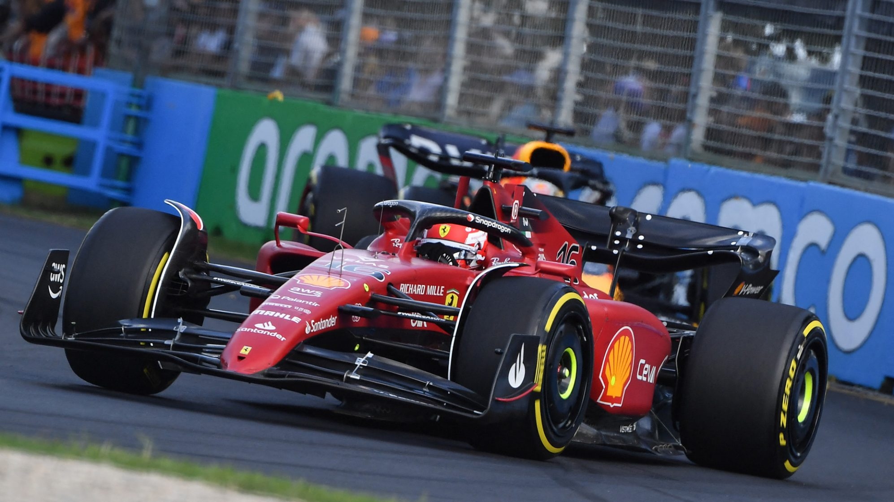

Résumé GP d'Australie 2022
Rédigé par Clément Lazzarini, le 10/04/2022
Le surclassement Leclerc
Charles Leclerc a été au-dessus de tout le monde durant ce week-end. Une fois premier et deux fois second lors des séances d'essais libres, pole position, vainqueur, meilleur tour en course et tous les tours de la course en tête, bref carton plein pour le pilote monégasque. Alors certes, il ne s'agit pas seulement d'une victoire du pilote, car c'est aussi une victoire pour toute la Scuderia Ferrari qui lui mit à disposition une machine parfaitement réglée pour le week-end. Vraiment impressionnant.
La course, c'est sur la piste messieurs !
Le week-end parfait, ce n'a pas été le cas pour tout le monde. À commencer par l'autre pilote de la Scuderia, Carlos Sainz qui a oscillé entre malchance et maladresse. Malchance lors des qualifications tout d'abord puis maladresse quand il amène trop de vitesse au virage 9 lors du second tour de course. Obliger de coupé le virage, il finira sa course dans le bac à gravier. Mais ce n'est pas le seul à être sorti de piste. Vettel, Gasly ou encore Bottas sont allés faire un peu de hors-piste suite à des erreurs de pilotages pour les deux premiers et par force pour le pilote finlandais.
Problèmes de fiabilité ou malchance ?
C'est donc Charles Leclerc qui s'impose devant le pilote Red Bull... Sergio Perez ! Malgré un très bon travail de Max Verstappen pour coller au maximum avec le rythme de la Ferrari, c'est sa machine, et plus particulièrement son moteur, qui va le contraindre à l'abandon. Déjà un deuxième abandon en 3 courses pour le champion du monde 2021, qui voit s'échapper Charles Leclerc en tête du championnat pilote. Alors malchance ou problèmes de fiabilité ?